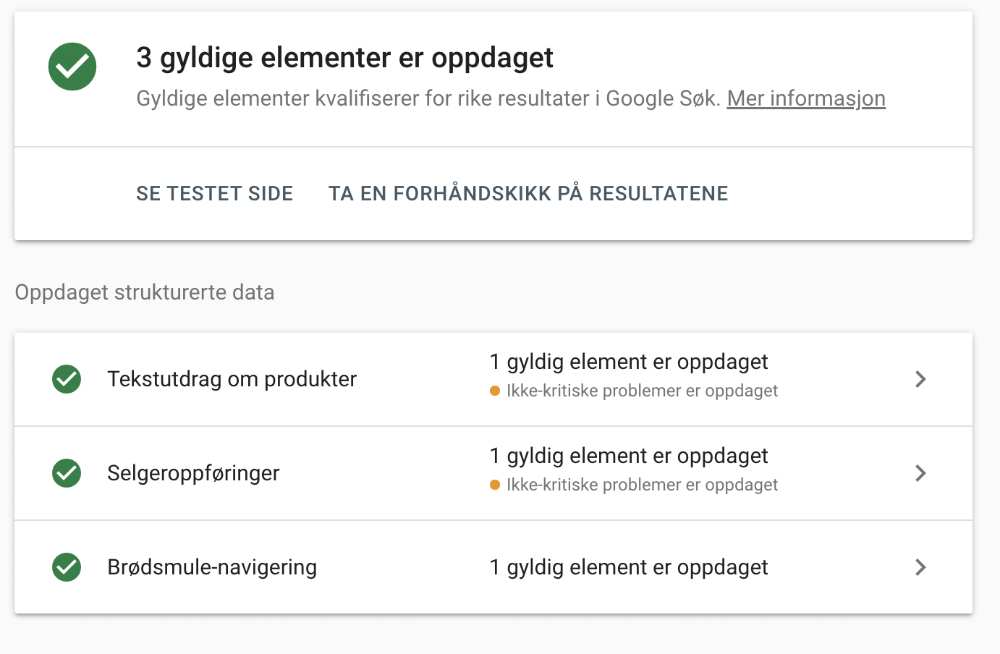

Sammenligning av analyse
| Lighthouse |
Webaim |
ChatGPT |
| Manglende metadata |
Empty links: Ikonene mangler tekst |
Manglende metadata |
| Klikkflater (linker/ikoner) bør være større på mobilversjon |
Contrast Error: For utydelige kontraster |
Manglende alt-attributter |
| Ikoner mangler tekst |
Redundant link: Linker som peker til samme side |
Sørge for at URL-ene er beskrivende |
| For utydelige kontraster |
- |
For utydelige kontraster |
| h-tagger er ikke i kronologisk rekkefølge |
h-tagger er ikke i kronologisk rekkefølge |
Tydelig og meningsfull brødsmulesti |
| - |
- |
Vurdere å bruke ARIA-attributter |
| - |
- |
Kontrollere lesbarhet (skriftstørrelse) |
Som det fremkommer i tabellen, er det mye av de samme feilene som går igjen. Jeg stoler ikke helt på analysen til ChatGPT
da den nevner feil som ikke er tilfelle, f.eks at jeg mangler alt-attributter på bildene mine. Den nevner også å validering av HTML-dokumentene,
noe jeg også har gjort. Jeg har også valgt å ikke ta med feil som ikke er relevante for denne oppgaven i tabellen, som f.eks XML-sitemap.
Tilgjengelighet
Har testet nettstedet mitt med skjermoppleserverktøyet på Mac. Skjermoppleseren leser alt på norsk, og tilsynelatende
fungerer alt som det skal. Skjermoppleseren får med seg attributter, overskriftsnivå, all tekst, lenker etc. Eneste jeg synes
var merkelig er at når "Nora" leser opp linkene, sier hun "Brukte - lenke - Meny". Forstår ikke helt hvorfor hun legger til "Brukte".
Etter å ha brukt skjermoppleseren forstår jeg hvorfor det er viktig å ha med beskrivende attributter og at siden er semantisk korrekt.
Synes det var noe vanskelig å navigere med tastatur, mest fordi jeg aldri har gjort det før. Brukte litt tid på å sette meg inn i det, men
etterhvert gikk det greit. Fikk inntrykk av at det fungerer som det skal.
Jeg har også lagt til en "Skip to main content"-knapp, som gjør at brukeren kan hoppe over navigasjonen og gå rett til hovedinnholdet.
Har også lagt til ARIA-attributter på navigasjon, logo og brødsmulesti for å tydeliggjøre funksjonene.
Microdata og Rich Results

Jeg har kjørt HTML-koden tilhørende produkt-siden gjennom Google's "rich-results" verktøy etter å ha lagt på microdata.
Jeg har lagt på Microdata i tekstutdrag om produkt, selgeroppføringer og brødsmule-navigasjonen. Som det fremkommer av bildet over
er det noen ikke-kritiske problemer som jeg har valgt å ikke gjøre noe med. Dette er "review" og "aggregateRating", som ikke er relevant for denne nettbutikken.